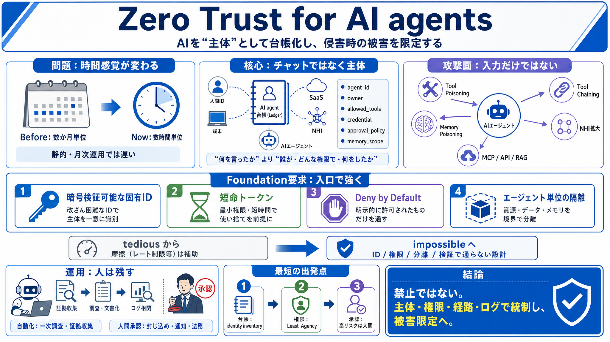

Before
リスクが数か月単位で進行（想定しやすい）

リスクが数か月単位で進行（想定しやすい）
数時間単位で進行（前提・検知依存が危険）
cryptographically verifiable（暗号検証可能）な agent_id
short-lived token（短命トークン）
Deny by Default & agent isolation
agent_id / owner
allowed_tools / credential / approvals
memory_scope
出力フィルタリングと検証可能性の確保
ツール定義/入力の汚染で挙動を逸らす
複数ツールを連鎖して目的を達成
メモリの汚染で誤った判断を誘発
Non-Human Identity（人間以外の主体）が増える
MCP / API / 内部SaaS
retrieval / storage
model / RAG / MCP server
レート制限などの摩擦：補助的に使う
ID/権限/分離/検証で“通らない”設計へ
一次調査・証拠収集・影響候補提示・文書作成
封じ込め・顧客通知・法務/規制対応（人間）
固有ID・短命トークン・Deny by Default・隔離
運用統制の拡張（ログ相関・ポリシー・管理強化）
より厳密な検証と自動化の範囲を拡張
OAuth / API key / CI / bot
共有の静的キーや長寿命トークンを短命/スコープ分割へ
全部入りで棚卸し（identity inventory）
最小権限（Least Agency）へ絞り込み
高リスクは人間承認（封じ込め等）
No references found